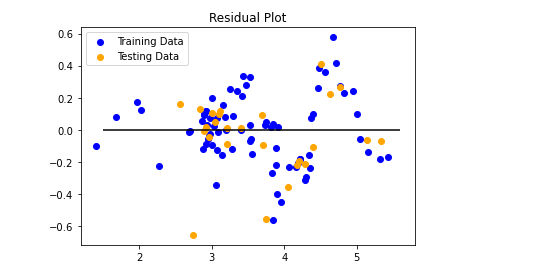

Real Estate Data Analytics
Understanding Real Estate Markets through Data Analytics.
Impact of COVID-19 on the Real Estate Markets in 2020
An analysis of real estate markets prior to 2020 and show how those markets were interrupted in 2020 by the COVID0-19 pandemic.
Predicting Real Estate Markets for Real Estate Investors
A Machine Learning Model of the Real Estate Markets and Predictions of Future Real Estate Markets based on several economic indicators.
New Homes Sales--a Predictor of Existing Home Sales Real Estate Markets?
Analyzing whether New Home Sales are a Leading Predictor of Existing Home Sales in the US Real Estate Market.
Predicting Real Estate Markets for Real Estate Investors
Real Estate Investors will adopt a "Buy & Hold Strategy" or a "Buy & Flip Strategy" depending on whether they think the real estate market is getting stronger or weaker.
To analyze the strength of the real estate market, we will classify the market into a Buyer’s Market, a Seller’s Market, and a Balanced Market.
In a Buyer’s Market, the supply of homes (available homes for sale) exceeds the demand for homes (the number of buyers seeking to purchase homes). A Buyer’s Market is one in which there are more than 5 months of housing inventory.
In a Seller’s Market, the demand for homes (the number of buyers seeking to purchase homes) exceeds the available supply of homes on the market. A Seller’s Market is one in which there are fewer than 3 months of housing inventory.
In a Balanced Market, the demand for homes (the number of buyers seeking to purchase homes) is nearly equal to the available supply of homes on the market. A Balanced Market is one in which there are 3-5 months of housing inventory.
The supply of homes is also known as the absorption rate and is indicated using the Months of Supply of Inventory.
The chart below shows the months of supply in the real estate markets since 2012.
Several Economic Factors affect the real estate markets.
The charts below show the Economic Factors that affect the real estate market. They are the Independent Variables that we selected to build our model to predict the real estate market.
They include:
Unemployment Rate Average Hourly Wages Mortgage Intererst Rates House Price Index Gross Domestic Product (an indicator of the strength of the economy)

We developed a machine learning model using the five economic indicators that we highlighted on the previous page, namely:
Unemployment Rate Average Hourly Wages Mortgage Intererst Rates House Price Index Gross Domestic Product (an indicator of the strength of the economy)
We then tracked the "strength" of the real estate market over a time series for each month. The strength of the market indicates whether the market is a Buyer’s Market (more than 5 months of housing inventory), a Seller’s Market (fewer than 3 months of housing inventory), or a Balanced Market (3-5 months of housing inventory).
The supply of homes is also known as the absorption rate and is indicated using the Months of Supply of Housing Inventory.
The data that we used to train and test our machine model is below.
After we ran our model, we visualized the training and testing data.

Our Model Score (R-squared) is:
92%
We then ran some predictions on our Real Estate Markets model.
Prediction 1:
What would happen if all factors were consistent with the January 2020 data except that the economy crashed, e.g., GDP = 10,000?
January 2020 Data:Mortgage Interest Rate: 3.51 Housing Price Index: 197.36 Unemployment Rate: 3.5 Average Hourly Rate: 28.43 Gross Domestic Product: 19,263.831 In January 2020, the Months of Supply of Real Estate Inventory was 2.7 months, indicating a Seller's Market.
We changed GDP to 10,000, and our model returned: 3 months, the very beginning of a Balanced Market.
Prediction 2:
What would happen if all factors were consistent with the January 2020 data except that the mortgage interest rates rose to 10%?
January 2020 Data:Mortgage Interest Rate: 3.51 Housing Price Index: 197.36 Unemployment Rate: 3.5 Average Hourly Rate: 28.43 Gross Domestic Product: 19,263.831 In January 2020, the Months of Supply of Real Estate Inventory was 2.7 months, indicating a Seller's Market.
We changed mortgage interest rate to 10%, and our model returned: 5.5 months, indicating a strong Buyer's Market.